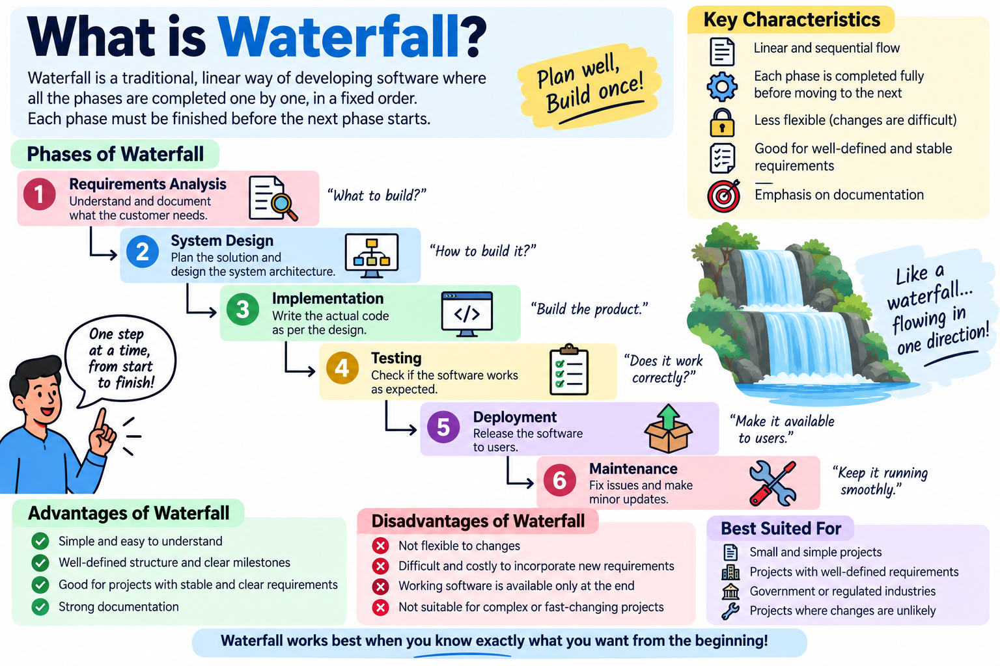
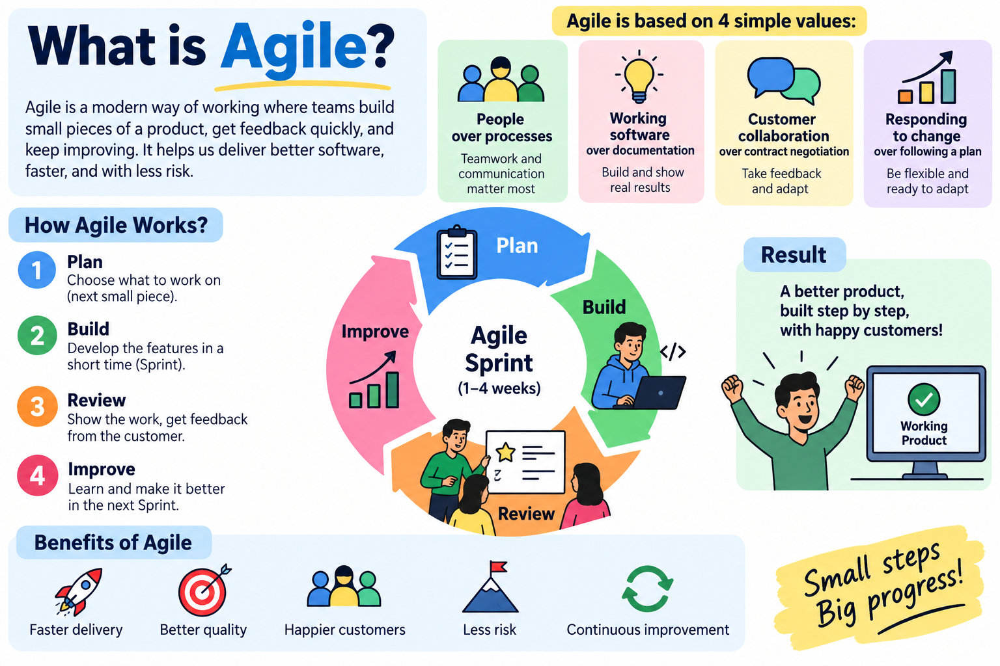

Waterfall vs. Agile Methodology
Comparing traditional sequential execution with modern iterative agility in software delivery.
The Tale of Two Paradigms: Building TastyDash
To understand the revolutionary shift to Agile, let's see what happens when we attempt to build the TastyDash Food Ordering Application using Waterfall vs. Agile.
🌊 Waterfall Scenario
The team spends 6 months writing a 400-page specification document for TastyDash with 120 features (Live GPS, Crypto Payments, Drone Delivery, Voice Search).
- ❌ No user tests for 10 months: First release happens at Month 10.
- ❌ High risk of market failure: Market trends changed during the 10 months. Users preferred simple 2-click ordering, not drone delivery.
- ❌ Late Bug Discovery: Payment integration bugs discovered only at Month 9 during final QA.

📌 Waterfall Infographic: Sequential flow & fixed phase structure
⚡ Agile Scenario
The team launches an MVP (Minimum Viable Product) in 3 weeks: Order pizza from 5 local restaurants with cash on delivery.
- ✅ Real User Feedback in 3 weeks: Users love the app and ask for credit card payments!
- ✅ Sprint 3 (Week 6): Added Stripe Credit Card payment based on user demand.
- ✅ Sprint 5 (Week 10): Added Live GPS Driver tracking. Constant value delivered every fortnight!

📌 Agile Infographic: Iterative sprint cycle & 4 core values
Detailed Comparison Matrix
| Feature / Dimension | Waterfall Model | Agile Framework |
|---|---|---|
| Execution Flow | Linear & Sequential (Phase by Phase) | Iterative & Incremental (Short 2-week Sprints) |
| Scope Flexibility | Fixed upfront; hard & costly to change | Flexible; backlog re-prioritized every sprint |
| Customer Involvement | High at initial contract & final handover | Continuous collaboration in sprint demos |
| Testing Approach | Dedicated phase after coding completes | Continuous automated & manual testing in sprint |
| Delivery of Value | Single big-bang launch at end of project | Frequent working software releases (bi-weekly) |
| Risk Level | High (risk of building the wrong product) | Low (early validation & continuous course-correction) |
The Agile Manifesto (Applied to TastyDash)
4 Core Values that guide modern Agile software engineering teams: